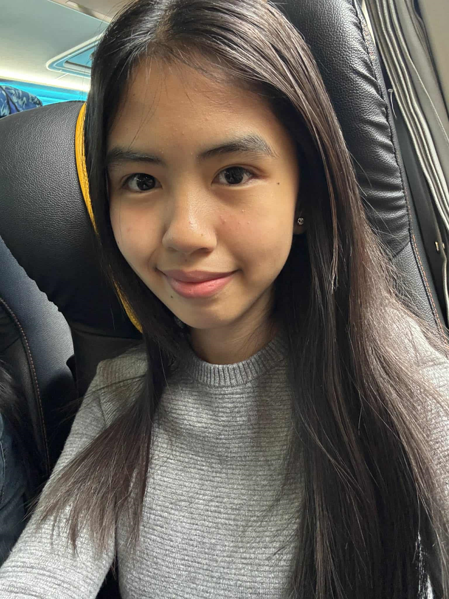

Social media has become a major part of teen life today, offering a space to stay connected, showcase creativity, and explore fresh ideas from across the globe. Yet, alongside these perks come challenges like cyberbullying, misleading information, and the pressure to keep up online.
Understanding the influence of social media is crucial not just for students, but also for educators who guide them. By developing an awareness of responsible digital behavior, teenagers can navigate online spaces more safely, make informed choices, and use technology as a tool for creativity, learning, and personal growth. Educators, on the other hand, can support students by teaching strategies to manage online pressure, critically evaluate information, and foster positive interactions in the digital world. In this way, social media can become not just a source of entertainment, but a platform for meaningful connection and productive engagement.
As a student, I’ve noticed just how much social media shapes the way teens communicate and express themselves. It opens doors to creativity, learning, and new experiences, but it also comes with its fair share of risks. Being aware of these challenges is key to using these platforms in a smart and positive way.

I’m Caxandra Keith B. Manuel, a student writer and an aspiring web designer with a love for all things digital. I spend my time creating content that not only looks good but also shares my ideas and perspectives with others. Exploring technology and discovering new tools fuels my curiosity, while writing allows me to express my thoughts and connect with people in meaningful ways. My passion for creativity and communication inspires me to take on projects that challenge me, push my skills further, and leave a positive impact on those who experience my work. Every article I write, every design I create, reflects my dedication to learning, my love for storytelling, and my drive to make my digital footprint both fun and purposeful.